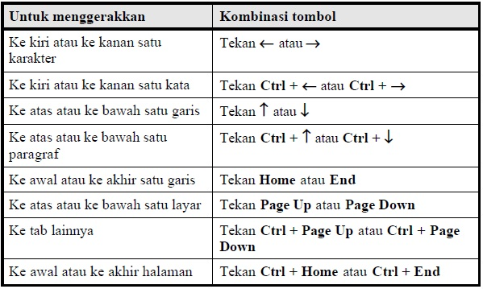
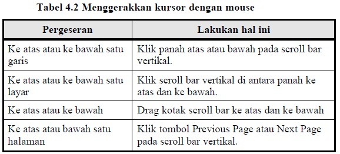

6 Berpindah di area halaman
Untuk menuliskan teks, kita harus menggerakkan kursor ke lokasi yang kita
inginkan, setelah itu barulah kita menuliskan teks.
Untuk menggerakkan kursor, Anda bisa menggerakkan mouse atau menekan tombol
tertentu pada keyboard.
Kelebihan mouse adalah kecepatan gerak dan jangkauannya menyeluruh pada
bidang tulis. Namun sayangnya, untuk hal-hal tertentu pengggunaan keyboard bisa
lebih teliti dan praktis. Bagian ini akan membahas pemakaian mouse maupun
keyboard untuk berpindah halaman.
6.1 Berpindah menggunakan keyboard
Kombinasi tombol keyboard untuk keperluan pergerakan kursor bisa Anda lihat pada
Tabel 4.1.
Tabel 4.1 Menggerakkan kursor dengan keyboard

6.2 Berpindah menggunakan mouse
Seperti telah disinggung di atas, selain memakai keyboard, Anda bisa juga
mengarahkan kursor memakai mouse.
Jika lokasi yang Anda nginkan masih tampak pada layar, klik saja langsung pada
lokasi tersebut. Namun jika lokasi tersebut tidak tampak pada layar, Anda harus
menggeser tampilan layar agar lokasi yang Anda inginkan bisa kelihatan, lalu klik
lokasi yang Anda inginkan tersebut.
Tabel 4.2 menggambarkan cara memindahkan lokasi kursor memakai mouse.

Ingatlah bahwa menggeser dengan mouse tidak berarti menggerakkan kursor, kursor
tetap berada pada lokasinya, meskipun layar telah menampilkan halaman lain.
Setelah layar yang Anda inginkan tampil, Anda tetap harus klik mouse pada lokasi
baru agar kursor mouse berpindah ke lokasi tersebut.
Anda bisa menggunakan cara cepat untuk berpindah dari lokasi satu ke lokasi
lainnya yang baru Anda edit dengan menekan tombol Shift + F5.
Copyright © Herlan Lesmana
Created with the Freeware Edition of HelpNDoc: Free HTML Help documentation generator